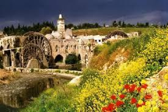
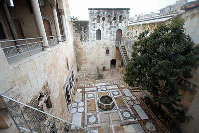
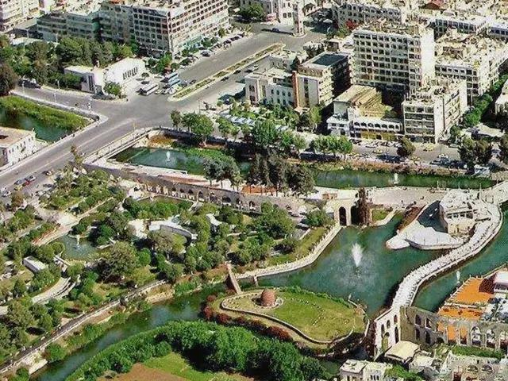

Discover the most beautiful and historic landmarks of Hama
From ancient ruins to serene gardens, Hama offers a wealth of attractions

Hama is famous for its 17 ancient norias (water wheels) along the Orontes River. These engineering marvels, some dating back to the 11th century, are used to lift water into aqueducts for irrigation.

Hama's old city features beautiful traditional buildings with stunning courtyards, stone masonry, and intricate architectural details from the Ottoman era.

The Orontes River flows through the heart of Hama, creating beautiful parks and gardens along its banks. It's a perfect place for evening walks.
Also known as the Umayyad Mosque, this beautiful mosque was originally built in the 12th century. It features stunning Islamic architecture with elegant minarets.
Built in the 18th century, this palace is a masterpiece of traditional Syrian architecture. It now houses the National Museum of Hama with artifacts from the region's history.
The banks of the Orontes River are beautifully landscaped with parks and gardens. Locals enjoy walking along the river, especially when the norias are illuminated.